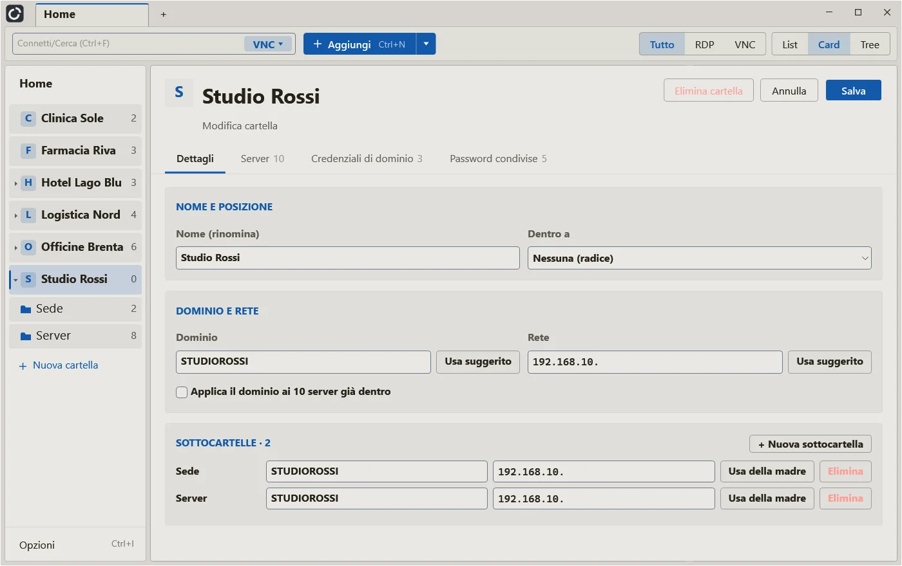
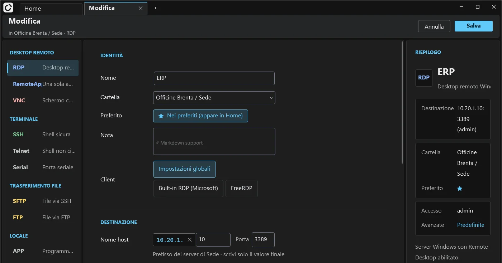
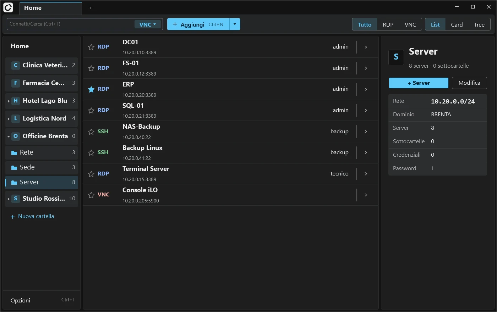
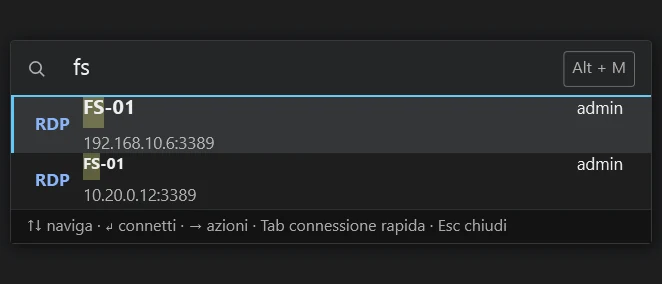
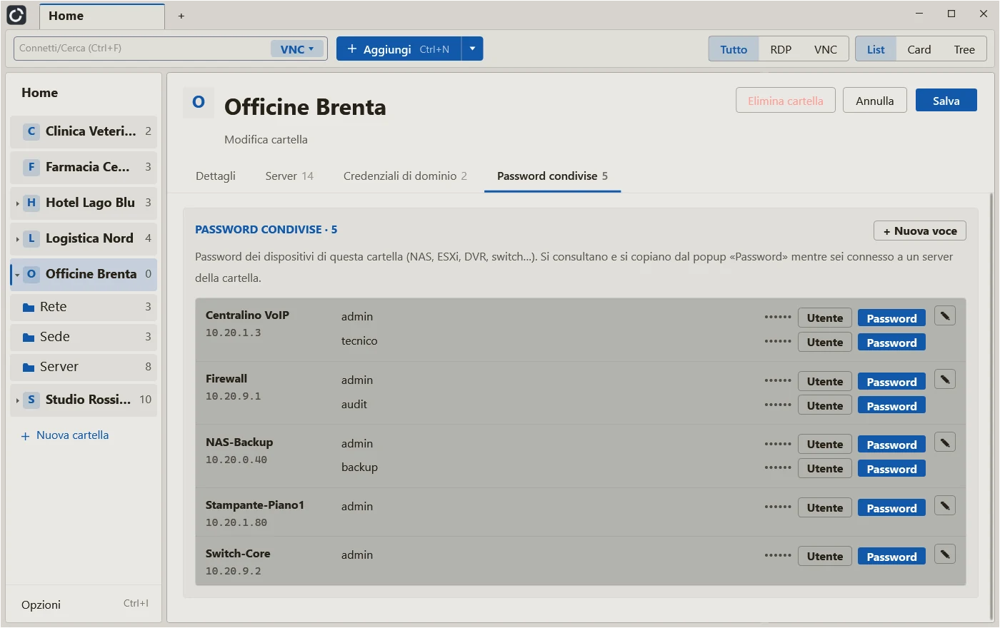
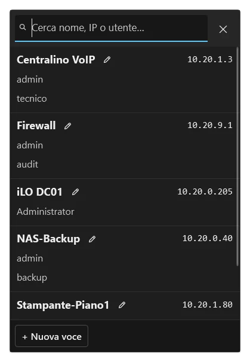
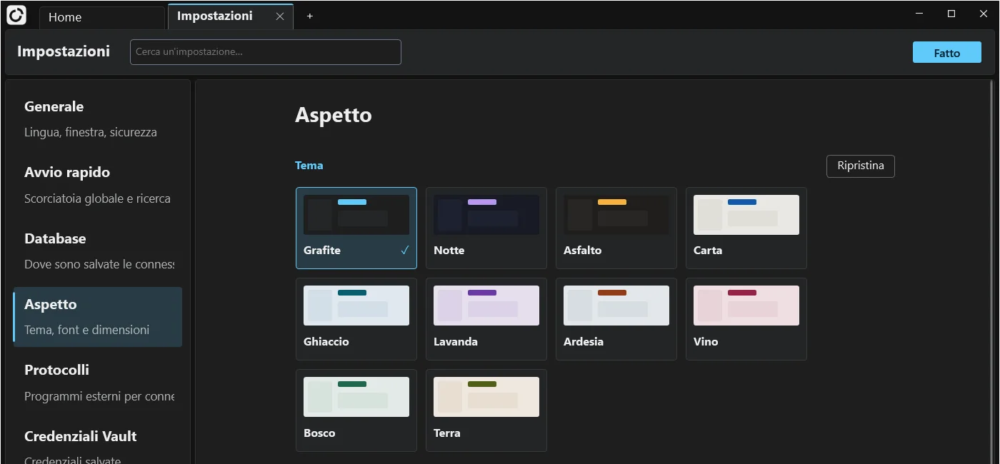

- Lemora
- Product
The program, for those who support many clients
The features of the Windows client, one per section, each with its status. What only teams need is on the For business page.
- Version
- 1.3.1.11127
- System
- Windows 10 2004+ · 11 · 64-bit
- Languages
- Italian · English
- License
- GPL-3.0
One client, one folder
The folder holds domain, network and credentials. Connections and subfolders inherit them: with the network 192.168.10. a server address is written as just 5.


- 1Domain
- 2Network
- 3Also the servers already inside
- 4Inheriting subfolders
Domain credentials of the folder
The client's domain users (BRENTA\admin, BRENTA\tecnico) are saved once in the folder and apply to all its servers: in the detail of a server they are enabled with one click.
The count next to each user shows on how many servers of the folder it is enabled.


Try it: what the connections receive
Folder Officine Brenta › Server
| Connection | Written | Address | Login |
|---|---|---|---|
| FS-01 | 12 | 10.20.0.12 | BRENTA\admin |
| DC01 | 10 | 10.20.0.10 | BRENTA\admin |
| SQL-01 | 21 | 10.20.0.21 | BRENTA\admin |
| VPN-Filiale | 172.16.4.9 | 172.16.4.9 | own user |
The last row has a full address and its own user: the folder does not change them.


Quick search, Alt+M
Opens on top of any program and searches the connections of all clients by name, address and user. Enter opens the session; Tab switches to a quick connection to an unsaved address.
The home page shows history, favorites and recently used connections. Tags (#printers, #vpn) filter across all clients.




Protocols
Each session is a tab. If the main address does not respond, Lemora tries the connection's alternative addresses in order.
| Protocol | Engine | Details | Status |
|---|---|---|---|
| RDP | FreeRDP 3 included in the file, or the Windows client | RemoteApp, gateway, drives, printers, smart cards, audio, multiple monitors. Each PC's certificate is remembered. | ready |
| VNC | Own viewer, no external program | ZRLE, Tight, Hextile, RRE, CopyRect encodings. Auto, Low, High quality, changeable while the session is open. Text clipboard. | ready |
| Files over VNC | TightVNC 2.x protocol | Remote disk browser: download, upload, rename, delete, with conflict handling. | ready |
| SSH | KiTTY, PuTTY or Windows Terminal inside the tab | Optional built-in terminal: themes, output search, split view. | ready |
| Telnet, serial | KiTTY or PuTTY inside the tab | COM port for switches and network devices. | ready |
| SFTP, FTP | Two-pane manager | External WinSCP, if preferred. | ready |
| External programs | Any executable | Address, user and password passed as parameters. | ready |
VNC on slow lines
With TightVNC the first screen drops from about 14.7 MB to 1.4 MB, thanks to the Tight decoder written for Lemora. In Auto quality it starts at 16 bits and the quality goes up or down with the bandwidth.
.mora files
A connection is exported to a .mora file; a double click opens it. The file contains no passwords.
admin@fw-brenta:~$ show interface wan1 wan1 up 82.91.14.6/29 1000full admin@fw-brenta:~$ show vpn ipsec sa sede-filiale established rx 1.2 GB tx 0.9 GB admin@fw-brenta:~$
Device passwords, next to the session
NAS units, switches, printers, firewalls, phone systems: one list per folder, separate from the connection credentials. During an RDP or VNC session it opens at the side with Ctrl+Alt+P.




- 1Folder list
- 2Tab in the session
- Inheritance
- The tab shows the devices of the connection's folder and of all the folders above it: the client's network also appears inside "Sede" and "Server".
- Multiple logins per device
- Administrator user, service user, panel PIN: several pairs on the same entry.
- Copy
- User, password or address with one click. Verification and timed clipboard: Security, S.3.
- Quick connections
- The tab is also available for an unsaved address, with the entries of the chosen folder.
Extension for web panels
Lemora Web Extension, for Firefox. On the login page of a router or NAS it offers the entries for that device and fills them in on click. Lemora installs it: without the program on the same PC it does nothing.

- Fill in
- On click of the icon in the field or in the panel. Never on its own.
- Save since 1.0.3
- After a new login it offers to save it, only if the address bar shows an IP address. On sites with a domain name it offers nothing.
- Folder
- Each saved entry goes into a folder chosen at that moment.
- Browser
- Firefox, signed by Mozilla, version 1.0.9. Lemora installs it from its settings.
Lemora · 192.168.1.1
Try it · the Lemora icon in the field fills in the form; or type user and password by hand and press Sign in, with the IP and with the domain.
Tabs, windows and keyboard
- Detachable tabs
- A tab dragged out becomes a window; dragged back in, it becomes a tab again. Two sessions sit side by side in split view.
- Browser shortcuts
- Ctrl+Tab, Ctrl+W, Ctrl+T, F11 also work with an RDP or VNC session in the foreground.
- Key mapping
- For RDP and VNC, a setting decides which combinations (Win, Alt+Tab…) go to the remote PC and which stay local, with exceptions per connection. Ctrl+Alt+Del stays local: Windows enforces it.
- Background sessions
- With "Minimize to system tray", closing the window leaves the sessions open.
Claude inside RDP and VNC sessions
Lemora contains a local MCP server (the protocol Claude uses to work with external programs). Claude sees the session screen, reads the text, clicks, types and waits, like a technician in front of the PC.
- Find
- Search connections, folders and details; check whether a PC responds.
- See
- Screenshot with numbered elements, list of controls, text read with Windows OCR.
- Act
- Click, type, keys, scroll, drag, wait for something to change.
- Exchange
- Paste long texts, read the clipboard, send and fetch files with confirmation.
Try it · Claude with PC-Reception
- Files
invia_fileandprendi_filego through the RDP clipboard or the TightVNC protocol, up to 500 MB per transfer.
How Claude stays under the user's control: Security, S.6
Import
| From | Format | Notes |
|---|---|---|
| mRemoteNG | Exported CSV | Folders and connections. |
| Windows Remote Desktop | .rdp file | With the credentials Windows saved for that PC. |
| 1Remote, Lemora | JSON or .db database | Also from another installation. |
Checks on imported files: Security, S.4
Themes and requirements
Ten themes: Grafite, Notte and Asfalto dark; Carta, Ghiaccio, Lavanda, Ardesia, Vino, Bosco and Terra light. The extension follows the program's theme.


Theme Grafite · colours computed with the same rules as the program, on a small window.
- Components
- .NET and FreeRDP included in the file; WebView2 for the built-in terminal (already present in Windows 11)
- Languages
- Italian and English complete; the other twelve inherited from 1Remote lack the new features
- Startup
- Window visible at once, data loaded afterwards; ReadyToRun compilation
Files, checksum and installation modes: Download
With a Teams server
Server entries appear in the same folders as the PC's own connections, with the cloud next to them. The PC's permission decides what can be done with those entries.
- Read only
- Entries open and can be copied. Edit, Duplicate, Delete and Rename are not shown; creating an entry on the server is refused with a message.
- Requests
- The editor offers "Send to the server as a request". The entry stays as it is until approved; a new entry appears at once with the clock. A refusal arrives with the administrator's note.
- Server unreachable
- The request stays queued on the PC, with the clock, and goes out as soon as the server responds.
- Withdraw or correct
- A request still pending can be updated or withdrawn; the administrator always sees the latest version.
Try it · PC-GIULIA connected to Teams · folder Officine Brenta
- RDPFS-01
10.20.0.12☁ - RDPDC01
10.20.0.10☁◷
The messages are the program's own. The administrator side: For business, A.3.